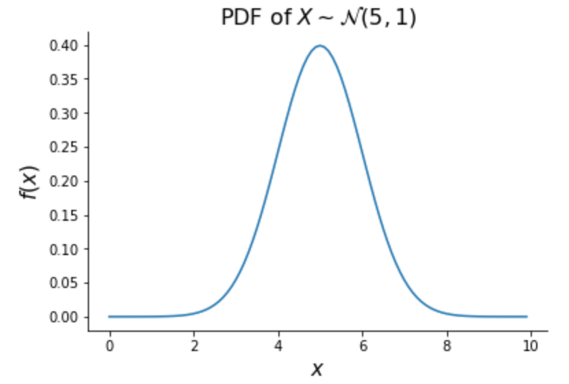

Probability¶
Many machine learning methods are rooted in probability theory. Probabilistic methods in this book include linear regression, Bayesian regression, and generative classifiers. This section covers the probability theory needed to understand those methods.
1. Random Variables and Distributions¶
Random Variables¶
A random variable is a variable whose value is randomly determined. The set of possible values a random variable can take on is called the variable’s support. An example of a random variable is the value on a die. This variable’s support is \(\{1, 2, 3, 4, 5, 6\}\). Random variables will be represented with uppercase letters and values in their support with lowercase letters. For instance \(X = x\) implies that a random variable \(X\) happened to take on value \(x\). Letting \(X\) be the value of a die roll, \(X = 4\) indicates implies that the die landed on 4.
Density Functions¶
The likelihood that a random variable takes on a given value is determined through its density function. For a discrete random variable (one that can take on a finite set of values), this density function is called the probability mass function (PMF). The PMF of a random variable \(X\) gives the probability \(X\) will equal some value \(x\). We write it as \(f_X(x)\) or just \(f(x)\), and it is defined as
For a continuous random variable (one that can take on infinitely many values), the density function is called the probability density function (PDF). The PDF \(f(x)\) of a continuous random variable \(X\) does not give \(P(X = x)\) but it does determine the probability that \(X\) is in a certain range. Specifically,
That is, integrating \(f(x)\) over a certain range gives the probability of \(X\) being in that range. While \(f(x)\) does not give the probability that \(X\) will equal a certain value, it does indicate the relative likelihood that it will be around that value. E.g. if \(f(a) > f(b)\), we can say \(X\) is more likely to be in an arbitrarily small area around the value \(a\) than around the value \(b\).
Distributions¶
A random variable’s distribution is determined by its density function. Variables with the same density functions come from the same distributions. Certain families of distributions are very common in probability and machine learning. Two examples are given below.
The Bernoulli distribution is the most simple probability distribution and it describes the likelihood of the outcomes of a binary event. Let \(X\) be a random variable that equals 1 (representing “success”) with probability \(p\) and 0 (representing “failure”) with probability \(1-p\). Then, \(X\) is said to follow the Bernoulli distribution with probability parameter \(p\), written \(X \sim \text{Bern}(p)\), and its PMF is given by
We can check to see that for any valid value \(x\) in the support of \(X\)—i.e., 1 or 0—, \(f(x)\) gives \(P(X = x)\).
The Normal distribution is extremely common and will be used throughout this book. A random variable \(X\) follows the Normal distribution with mean parameter \(\mu \in \R\) and variance parameter \(\sigma^2 > 0\), written \(X \sim \mathcal{N}(\mu, \sigma^2)\), if its PDF is defined as
The density of a Normal random variable gives this distribution the name “the bell curve”, as shown below. Values closest to \(\mu\) are most likely and the density is symmetric around \(\mu\).
